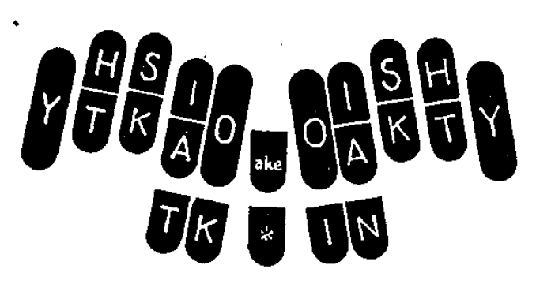
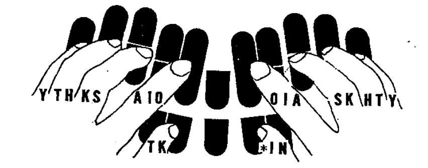
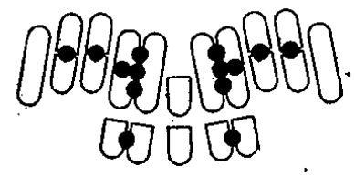

この本はステノタイプで日本語を速記する方法について述べたものであり、中に入れた練習問題と共に、ステノタイプを習うものの教科書またわ独習書として使われる。
This book describes a method for writing shorthand in Japanese using Stenotype, and along with the practice exercises included, can be used as a textbook or self-study book for those learning Stenotype.
ステノタイプは写真の様な小さなタイプライターである。うつ場合音はしない。ボタンは２２あり、文字はローマ字が出る。打つ紙は細長く、機械の下に入れておき、ボタンを打つと自動的に繰り出され、時だ映ると折り畳まれて機械の引き出しに治る。ボタンは両手の１０本の指でピアノのきいのように一度に幾つでも必要なだけ打つ事が出来るから、一つの言葉が一打ちで打てる。どんな早い話でも速記でき、また速記したものは誰にでも楽に読める。
A stenotype machine is a small typewriter, much like the one shown in the image below. There are 22 keys, labelled in Roman letters. A long and thin piece of paper is placed under the machine, and each time keys are pressed, it is automatically fed out and placed in the machine's drawer. You can hit as many buttons as you need to at once with all ten fingers on both hands, like the keys on a piano, so you can write a whole word with one stroke. Any fast speech can be written in shorthand, and anyone can easily read written shorthand.
したのノートはステノタイプで速記したものである。左から右へ、一行ずつ縦によむ。
Below is an example of Stenotype shorthand notes. Read each line from left to right.
上の読み方は： よいほん、きをやく、かおをふく、かきをたおす。
The above reads: よいほん yoi hon, きをやく ki o yaku, かおをふく kao o huku, かきをたおす kaki o taosu.
ステノタイプでは一語を一打ちにする。例えば「かお」という言葉を打つには、K、A、O三つのボタンお一度に打つ。すると紙の上にはKAOと現れる。押したボタンから指を話せば、紙は自動的に送られる。
Stenotype lets you write one word in one stroke. For example, the word かお kao can be written by pressing the K, A, and O keys at once; then KAO appears on the paper. When you move your fingers off the keys, the paper will automatically advance.

普通のタイプライターでは文字は真ん中に一文字ずつ打てる様になっているが、ステノタイプでは全ての文字は紙の上のそれぞれ決まった位置に現れる。このため、ステノタイプのボタンはピアノきいよ様に行くつでも一度に打つ事ができる。
二十一の文字は紙の上にしたの様に現れる。
On a conventional typewriter, each letter is typed in the center, but on a stenotype machine, each letter appears in a fixed position on the paper. For this reason, multiple stenotype keys can be pressed at once, as if playing the piano.
The twenty-one letters appear as such on paper:

ボタンを打つ構え：両手の小指はYのボタンの上に、薬指はTとHのボタンの間に、中指はKとSのボタンの間に、人差し指はAとIとOのボタンの真ん中に；左手の親指はTとKのボタンの間に、右手の親指はIとNのボタンの間に置く。
各々の文字とボタンを打つ指の受け持ちを覚えよ。
ボタンは使い方の上から三つの群れに分かれている。
The pinky fingers on both hands are on the Y keys; the ring fingers between the T and H keys; the middle fingers between the K and S keys; the index fingers between the A, I, and O keys; the left thumb between the T and K keys, and the right thumb between the I and N keys.
Memorize the positions of each key, and the finger assigned to that key.
Keys are divided into three banks based on their position:
１ペイジのステノタイプのノートをもう一度読め。各々の文字はそれぞれ決まった位置に出る。そのため、文字と文字の間は区々になっている。一行分が一打ちで打てる。全部のうち数は１０うち。
Read the stenotype notes on page 1 again. Observe that each letter appears in a fixed position, so there are gaps between the letters. One line can be written in one stroke, so there are ten strokes in all.
指は熊手のように曲げる。爪は短く切っておき、指の先でボタンを打つようにする。
ステノタイプでは一本の指でボタンとボタンの間を打つことがある。ボタンとボタンの間を打つ場所は次の図の丸印のところである。
Bend your fingers at a right angle. Keep your nails short, and use the tips of your fingers to press the keys.
On the stenotype machine, one finger may be used to hit multiple keys. See the circles in the diagram below for positions where you can hit between keys.

ボタンは指先で軽く素早く打つ。打ったらすぐボタンから指を離す。ボタンを打つ場合は決して指先を見てはいけない。
正確に、楽に、すらすらと、軽く、調子よく打てるようになるまで練習せよ。
Press the keys lightly and quickly with your fingertips. Let go of the key immediately after you hit it. Never look at your fingertips when pressing a key.
Practice until you can hit each key accurately, easily, and smoothly.
椅子と机の高さは、ボタンに指を置いた場合、手首と肘が水平になる様にする。
椅子に深く腰をかける。あしは軽く爪先で支える。背筋を真っ直ぐに伸ばし、腰から体を心持ち前に傾ける。
肩は自然いさげる。両肘は軽く体に付ける。
ボタンの打つには腕全体で打つ様な気持ちで打つ。
The height of the chair and desk should be such that your wrist and elbow are level when you place your fingers on the keys.
Sit deeply in the chair. Support your legs with your toes. Keep your back straight, and lean your body forward from the waist.
Your shoulders should be relaxed. Place both elbows against your body.
Press the keys as if you were pushing down with your whole arm.
左の群では次の表の音節のどれか一つを表す。
下のローマ字は最も簡単で素直な文部省訓令式綴り方である。音声学の立場から見てもヘボン式より合理的であり、国際的にも遥かに透が良い。
With the left bank, you can write one of the syllables in the following table:
The romaji system below is Kunrei-shiki, prescribed by the Ministry of Education, and is the simplest and most straightforward. It is more phonetically consistent than the Hepburn system, and is better accepted internationally.
| あa | いi | うu | えe | おo | やya | ゆyu | よyo | おうô | ゆうyû | ようyô | あいai | えいei | |
| かka | きki | くku | けke | こko | きゃkya | きゅkyu | きょkyo | くうkû | こうkô | きゅうkyû | きょうkyô | かいkai | けいkei |
| さsa | しsi | すsu | せse | そso | しゃsya | しゅsyu | しょsyo | すうsû | そうsô | しゅうsyû | しょうsyô | さいsai | せいsei |
| たta | ちti | つtu | てte | とto | ちゃtya | ちゅtyu | ちょtyo | つうtû | とうtô | ちゅうtyû | ちょうtyô | たいtai | ていtei |
| なna | にni | ぬnu | ねne | のno | にゃnya | にゅnyu | にょnyo | ぬうnû | のうnô | にゅうnyû | にょうnyô | ないnai | ねいnei |
| はha | ひhi | ふhu | へhe | ほho | ひゃhya | ひゅhyu | ひょhyo | ふうhû | ほうhô | ひゅうhyû | ひょうhyô | はいhai | へいhei |
| まma | みmi | むmu | めme | もmo | みゃmya | みゅmyu | みょmyo | もうmô | みょうmyô | まいmai | めいmei | ||
| らra | りri | るru | れre | ろro | りゃrya | りゅryu | りょryo | るうrû | ろうrô | りゅうryû | りょうryô | らいrai | れいrei |
| わwa | わいwai | ||||||||||||
| がga | ぎgi | ぐgu | げge | ごgo | ぎゃgya | ぎゅgyu | ぎょgyo | ぐうgû | ごうgô | ぎゅうgyû | ぎょうgyô | がいgai | げいgei |
| ざza | じzi | ずzu | ぜze | ぞzo | じゃzya | じゅzyu | じょzyo | ずうzû | ぞうzô | じゅうzyû | じょうzyô | ざいzai | ぜいzei |
| だda | でde | どdo | どうdô | だいdai | でいdei | ||||||||
| ばba | びbi | ぶbu | べbe | ぼbo | びゃbya | びゅbyu | びょbyo | ぼうbô | びょうbyô | ばいbai | べいbei | ||
| ぱpa | ぴpi | ぷpu | ぺpe | ぽpo | ぴゃpya | ぴゅpyu | ぴょpyo | ぽうpô | ぴょうpyô | ぱいpai | ぺいpei | ||
| んn | っ詰まる音 (gemination) | ||||||||||||
A、I、Oは母音を表す。
The A, I, and O keys represent vowels:
ボタンの中にない文字は、他の文字を組み合わせて表す。
Sounds not represented by a single key can be written by combining other keys:
ここで言う組み合わせは、他の文字を組み合わせて作った新しい文字と見て良い。例えば、IOはu（う）と読む一つの文字とみ、これをio（いお）とは読まない。
The combinations above can be considered new keys created by combining other keys. For example, IO is considered a single key pronounced u (う), not io (いお).
T、H、K、Sは子音を表す。
T, H, K, and S represent consonants:
組み合わせ：
Combinations:
子音と母音が組み合うと次のようになる。例：
Consonants and vowels can be combined, for example:
ku（く）は母音を付けないそのままの物。kû（くう）は母音のIOを組み合わせた物。
例外：打ち方の上から、次の四つの音節だけは例外的な組み合わせになっている。
ku (く) is the consonant on its own; kû (くう) uses the IO vowel chord.
Exceptions: The above rule does not apply to the following four syllables:
mi（み）は子音文字のwを使う。
bi（び）はwにAOを組み合わせた物。
pi（ぴ）はwにOを組み合わせた物。
do（ど）は子音文字のdだけを使う。
Yは「や」行、拗音、「〜あい」、「〜えい」列を表す。
mi (み) uses the w consonant chord;
bi (び) is a combination of w and AO;
pi (ぴ) is a combination of w and O;
do (ど) uses only the d consonant chord.
Y is used for the や-row, palatal sounds, and the -ai (〜あい) and -ei (えい) series:
Yが組み合うと母音に変化がある。星印（＊）の付いた組み合わせに注意せよ。
上の各々に子音が組み合うと次のようになる。例：
Y changes the vowel when combined. Pay special attention to the chords marked with an asterisk (*).
Combining a consonant with each of the above results in the following:
中の群のT、K、I、Nは次のように７つの音節を表す。
T, K, I, and N in the center bank represent the following seven syllables:
左の群では：
Alternatively, on the left bank:
右の群のボタンは数も文字も左の群と同じである。右のむれでの組み合わせは左のむと同じ；唯文字が向かい合いの位置になっている。
The right bank has the same keys as the left bank. The chords on the right side are identical to those on the left, except for positions being mirrored.
| YTHKSAIO | |||||||
| A | あ a | H SA | な na | T KSA | わ wa | TH A | ば ba |
| I | い i | H S I | に ni | T KSA O | び bi | ||
| IO | う u | H S | ぬ nu | TH | ぶ bu | ||
| A O | え e | H SA O | ね ne | TH A O | べ be | ||
| O | お o | H S O | の no | TH O | ぼ bo | ||
| H S IO | ぬう nû | ||||||
| AI | おう ô | H SAI | のう nô | TH AI | ぼう bô | ||
| Y AI | あい ai | Y H SAI | ない nai | YT KSAI | わい wai | YTH AI | ばい bai |
| Y A O | えい ei | Y H SA O | ねい nei | YTH A O | べい bei | ||
| Y A | や ya | Y H SA | にゃ nya | YTH A | びゃ bya | ||
| Y I | ゆ yu | Y H S I | にゅ nyu | YT KSA O | びゅ byu | ||
| Y O | よ yo | Y H S O | にょ nyo | YTH O | びょ byo | ||
| Y IO | ゆう yû | Y H S IO | にゅう nyû | ||||
| Y | よう yô | Y H S | にょう nyô | YTH | びょう byô | ||
| K A | か ka | H A | は ha | HK A | が ga | THK A | ぱ pa |
| K I | き ki | H I | ひ hi | HK I | ぎ gi | T KS O | ぴ pi |
| K | く ku | H | ふ hu | HK | ぐ gu | THK | ぷ pu |
| K A O | け ke | H A O | へ he | HK A O | げ ge | THK A O | ぺ pe |
| K O | こ ko | H O | ほ ho | HK O | ご go | THK O | ぽ po |
| K IO | くう kû | H IO | ふう hû | HK IO | ぐう gû | ||
| K AI | こう kô | H AI | ほう hô | HK AI | ごう gô | THK AI | ぽう pô |
| Y K AI | かい kai | Y H AI | はい hai | Y HK AI | がい gai | YTHK AI | ぱい pai |
| Y K A O | けい kei | Y H A O | へい hei | Y HK A O | げい gei | YTHK A O | ぺい pei |
| Y K A | きゃ kya | Y H A | ひゃ hya | Y HK A | ぎゃ gya | YTHK A | ぴゃ pya |
| Y K I | きゅ kyu | Y H I | ひゅ hyu | Y HK I | ぎゅ gyu | YT KS O | ぴゅ pyu |
| Y K O | きょ kyo | Y H O | ひょ hyo | Y HK O | ぎょ gyo | YTHK O | ぴょ pyo |
| Y K IO | きゅう kyû | Y H IO | ひゅう hyû | Y HK IO | ぎゅう gyû | ||
| Y K | きょう kyô | Y H | ひょう hyô | Y HK | ぎょう gyô | YTHK | ぴょう pyô |
| SA | さ sa | KSA | ま ma | T SA | ざ za | ||
| S I | し si | T KS | み mi | T S I | じ zi | ||
| S | す su | KS | む mu | T S | ず zu | ||
| SA O | せ se | KSA O | め me | T SA O | ぜ ze | ||
| S O | そ so | KS O | も mo | T S O | ぞ zo | ||
| S IO | すう sû | T S IO | ずう zû | ||||
| SAI | そう sô | KSAI | もう mô | T SAI | ぞう zô | AIO | ん n |
| Y SAI | さい sai | Y KSAI | まい mai | YT SAI | ざい zai | T AIO | っ |
| Y SA O | せい sei | Y KSA O | めい mei | YT SA O | ぜい zei | ||
| Y SA | しゃ sya | Y KSA | みゃ mya | YT SA | じゃ zya | ||
| Y S I | しゅ syu | YT KS | みゅ myu | YT S I | じゅ zyu | ||
| Y S O | しょ syo | Y KS O | みょ myo | YT S O | じょ zyo | ||
| Y S IO | しゅう syû | YT S IO | じゅう zyû | ||||
| Y S | しょう syô | Y KS | みょう myô | YT S | じょう zyô | TK IN | |
| T A | た ta | T K A | ら ra | THKSA | だ da | I | 〜い -i |
| T I | ち ti | T K I | り ri | K I | 〜き -ki | ||
| T | つ tu | T K | る ru | K | 〜く -ku | ||
| T A O | て te | T K A O | れ re | THKSA O | で de | T I | 〜ち -ti |
| T O | と to | T K O | ろ ro | THKS | ど do | T | 〜つ -tu |
| T IO | つう tû | T K IO | るう rû | N | 〜ん -n | ||
| T AI | とう tô | T K AI | ろう rô | THKSAI | どう dô | T N | 〜っ |
| YT AI | たい tai | YT K AI | らい rai | YTHKSAI | だい dai | ||
| YT A O | てい tei | YT K A O | れい rei | YTHKSA O | でい dei | ||
| YT A | ちゃ tya | YT K A | りゃ rya | ||||
| YT I | ちゅ tyu | YT K I | りゅ ryu | ||||
| YT O | ちょ tyo | YT K O | りょ ryo | ||||
| YT IO | ちゅう tyû | YT K IO | りょう ryû | ||||
| YT | ちょう tyô | YT K | りょう ryô |
言葉の頭の音節は左の群を使う。
Use the left bank to write the first syllable of a word.
左の群の音節の次に、中の群で表すことの出来る音節が来る場合は、必ず中の群お使う。
If a syllable on the left bank is followed by a syllable that can be represented by the center bank, always use the center bank.
一打ちで打てない場合はさらに打ち加える。
If a word can't be written in one stroke, use additional strokes.
一つの言葉は一つのまとまった形で表す。
Each word is written with one outline.
「が、の、に、を」などのような言葉は、前の言葉に含めた形で表す。
The words が, の, に, and を are included in the previous word.
「を、へ、か、や」などのような言葉だけを打つ場合は右の群を使う。
Always use the right bank when writing を, へ, か, and や.
中の群のKNは、左の群と右の群の音節が重なってできた言葉を示す印に使う。例：
The KN chord in the center bank is used to repeat a word formed with the left and right banks. Example:
重なる言葉が濁る場合も、同じようにして表す。例：
Write repetition the same way even when the initial consonant becomes voiced. Example:
次のような場合には左の群のKAIO、または右の群のOIAKを使う。例：
In the following cases, use KAIO from the left bank, or OIAK from the right bank:
打つてまを省くため、また速記のノートを読みやすくするため、ステノタイプでは略語を使う。略語の数は２００ほどある。
略語は、（１）略す言葉の形、（２）それらが日本語の中で使われる具合、（３）ステノタイプの上での略語の組み立て方などによって、いろいろな種類に分かれている。
略語１〜１８はステノタイプで使う略語の全てとそれらの仕組みについて述べた物である。略語の仕組みを理解するには、これまでのところをよく理解し、覚えていなければならない。
略語は普通の言葉とは違った形に組み立てられている。だから普通の言葉と略語とが紛れるようなことはない。略語を使うと、速記下ノートが返って読みやすくなるのはそのためである。
Stenotype uses briefs to save time and make shorthand notes easier to read. There are approximately 200 briefs.
Briefs are classified under several categories, depending on (1) the form of the word being abbreviated; (2) how they are used in Japanese; and (3) how the briefs are written in steno.
Sections 1 through 18 describe all of the briefs used in stenotype. To understand how briefs work, you must be familiar with the theory principles we have learned so far.
Briefs are constructed differently from ordinary words, so there is no confusion between ordinary words and briefs, which makes shorthand notes easier to read.
左の群も右の群も使わないで、中の群のT、K、I、Nだけを打つと、次のような略語になる。
Using the center bank keys T, K, I, and N without using the left or right bank results in the following briefs:
使い方の例：太線のところを比べてみよ。
Usage Example: Compare the lines in bold.
左の群の「ん」（AIO）の音節と組み合う、I、Nは「は、の、も」を表す。
I and N can represent は, の, or も when combined with ん (AIO) in the left bank.
略語の組み合わせ：中の群で表す「に、で」は「は、の、も」と組み合う。
Combinations: You can combine に or で with は, の, or も using the center bank:
左の群、または右の群において、これまでに述べた組み合わせにない組み合わせわ次のような略語になる。
Unused chords on the left and right banks are assigned to briefs as follows:
略語の組み合わせ：この略語の後に「は、の、も」が来る場合は、中の群のI、Nを組み合わせて、次のようにして表す。
Combinations: You can combine any of the briefs above with は, の, or も using the center bank:
右の群も同じように使う。
Similarly for the right bank:
この略語はAIOが組み合った物である。
The following briefs use the AIO chord:
略語の組み合わせ：この略語の後に「は、の、も」が来る場合は次のようにして表す。（中の群のI、Nが「は、の、も」を表している。）
略語：（右の群）
The briefs above can also be combined with は, の, or も using the I and N keys in the center bank.
Right bank briefs:
右の群で略語２または３を表す場合、中の群のINは右の群の略語の後に来る「は、の、も」を表す。
略語：この略語は右の群だけ使う。
When combining one of the right bank briefs above with IN from the center bank, the center bank represents one of は, の, or も that comes after the brief.
The following briefs are only available on the right bank:
中の群のIが「は」を表している。
略語の組み合わせ：
The I key from the center bank represents は in this case.
Combinations:
この略語は左の群の音節と中の群のTK、または右の群の音節と中の群のINが組み合った物。
This set of briefs combines syllables from the left bank with TK from the center bank, or syllables from the right bank with IN from the center bank.
TK、INと結びつく左も群または右の群は略す言葉と最も関係のある音節ー普通略す言葉の頭の音節ーを持って組み当ててある。
この場合TKまたはINはこの略語を示す印の役目をしている。
右の群も同じように使う。
The briefs above use the syllable most related to the word being abbreviated, which is usually the first syllable of the word.
In this case, TK or IN is used to indicate the abbreviation.
The right bank briefs are constructed the same:
略語もいみに関係なく、その音を表す。
The briefs represent sound, regardless of meaning:
これまでに述べた略語１、２、３及び略語４は他の音節または他の略語と組み合う。
Briefs 1, 2, 3, and 4 may be combined with other syllables or briefs.
左の群の略語と組み合うI、Nは「は、の、も」を表す。
These briefs can be combined with I and N to express は, の, or も.
後に来る言葉によって、略語が文法的に変化する場合がある。
Briefs may also be conjugated depending on the following word:
使い方の例：太字の所を比べて見よ。
Usage example: Compare the lines in bold.
使い方の例：太字の所を比べて見よ。
Usage example: Compare the lines in bold.
使い方の例：
Usage examples:
略語の変化：この略語のしりが「〜く、〜き」に変化したものは、次のようにして表す。
Conjugation: The briefs above can be conjugated with 〜く (-ku) and 〜き (-ki) as follows:
略語の変化：この略語のしりが「〜に、〜の」に変化したものは、次のようにして表す。
Conjugation: The briefs above can be conjugated with 〜に (-ni) and 〜の (-no) as follows:
使い方の例：太字の所を比べて見よ。
Usage example: Compare the lines in bold.
略語の比較：
Brief comparison:
略語の変化：この略語のしりが「〜た、〜て、〜と」に変化したものは、次のようにして表す。
Conjugation: The briefs above can be conjugated as follows:
使い方の例：太字の所を比べて見よ。
Usage example: Compare the lines in bold.
使い方の例：太字の所を比べて見よ。
Usage example: Compare the lines in bold.
略語の組み合わせ：この略語の後に「は、の、も」が来る場合は、中の群のI、Nを組み合わせて、次のようにして表す。
Combinations: You can combine the briefs above with は, の, or も using I and N from the center bank:
略語の組み合わせ：
Combinations:
略語の組み合わせ：
Combinations:
使い方の例：太字の所を比べて見よ。
Usage example: Compare the lines in bold.
使い方の例：太字の所を比べて見よ。
Usage example: Compare the lines in bold.
使い方の例：太字の所を比べて見よ。
Usage example: Compare the lines in bold.
使い方の例：
Usage example:
詰まる音の次には普通「k、s、t、p」の音節が来る。この略語は詰まる音節の次に「k、s、t、p」以外の音節お付けて組み立ててある。
Geminated consonants are usually followed by one of k, s, t, or p. Briefs can be constructed by adding a syllable other than k, s, t, or p after the geminated consonant.
中の群の詰まる音を使う場合も同じように使う。
The same also applies when using the TN chord in the center bank:
使い方の例：
Usage example:
数言葉は言う通りに打つ。
Write number words exactly as they are said.
文章を書く時いろいろな印を使うように、ステノタイプでも速記の立場から次のような印を使う。
Just as various symbols are used in normal writing, stenotype has a way to write symbols in shorthand.
使い方の例：
Usage example:
話した人を示すには、左の群と星印とを組み合わせる。例えば：
To indicate the person speaking, combine the left bank with an asterisk. Example:
などのようにあらかじめ決めておく。
Decide on these outlines in advance.
すでに売ってしまった部分を直したり、また上の部分に差し入れたりする場合には、星を三つ打った後にそれを打つ。
To edit or undo a stroke that has been written, write three asterisks then write the corrected version.
開け：行の間を開けたい場合は開けのボタンを打つ。
Space: Press the Space key to add a space between lines.